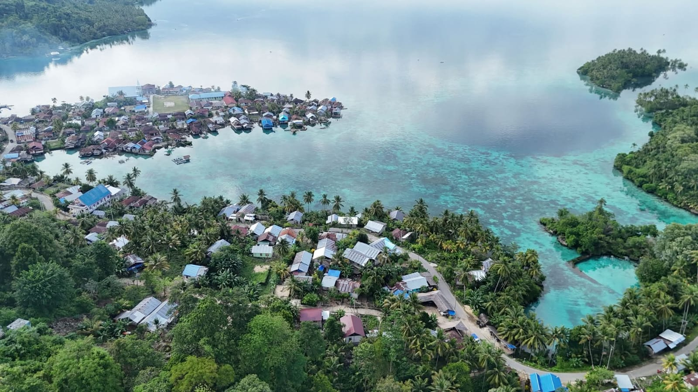
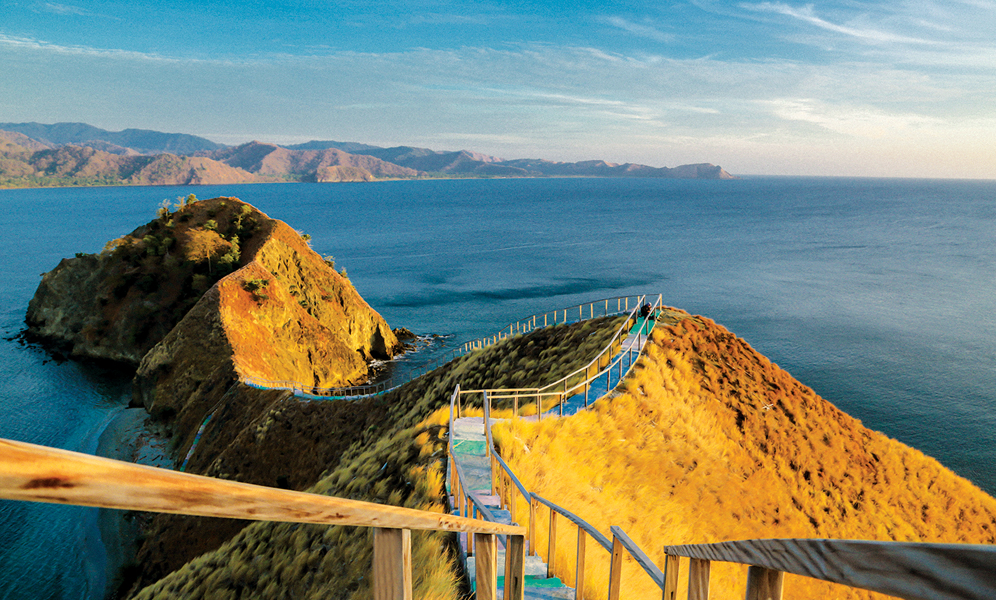
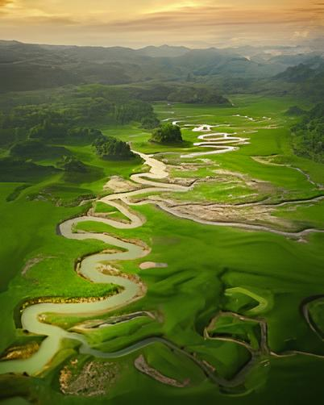
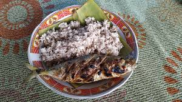

Kabupaten Banggai Kepulauan adalah salah satu kabupaten yang terdapat di provinsi Sulawesi Tengah, Indonesia. Ibu kotanya adalah Salakan. Kabupaten ini sebelumnya merupakan kesatuan wilayah dengan Kabupaten Banggai. Berdasarkan Undang-Undang Nomor 51 Tahun 1999 menetapkan pulau-pulau di tengah lautan tersebut menjadi daerah otonom Banggai Kepulauan, sementara kabupaten induk tetap disebut Kabupaten Banggai dan pemekarannya disebut Kabupaten Banggai Kepulauan (Bangkep).
Banggai menyimpan potensi wisata alam yang luar biasa, namun masih banyak yang belum terekspose secara luas. Dari gua-gua batu kapur, air terjun tersembunyi, hingga padang rumput luas di pedalaman Pulau Peleng—semuanya masih menunggu untuk dijelajahi. Bahkan, beberapa lokasi masih belum terpetakan secara lengkap, memberikan sensasi petualangan bagi para traveler sejati. Inilah yang membuat Banggai begitu menarik. Setiap perjalanan ke daerah ini bisa membawa kejutan baru.

Keindahan alam yang luar biasa




Seni Tari Balatindak merupakan Seni Tari Perang, Tari Balatindak sendiri mempunyai arti dari kata “Langkatano / Langka Lipu”. Tari Balatindak ini sudah dikenal sejak masa Kerajaan Banggai. Perkembangan Seni Tari Balatindak belum begitu baik di kalangan masyarakat Banggai tetapi belum juga punah.
Makanan khas ini merupakan makanan identik dengan masyarakat Banggai. Olahan berupa sagu dan kelapa yang disangrai lalu diberikan bumbu garam, gula dan sedikit perasan santan ini merupakan menu yang jadi primadona terutama saat rekreasi di Pantai. Biasanya disandingkan dengan ikan bakar dan sambal dabu-dabu.
